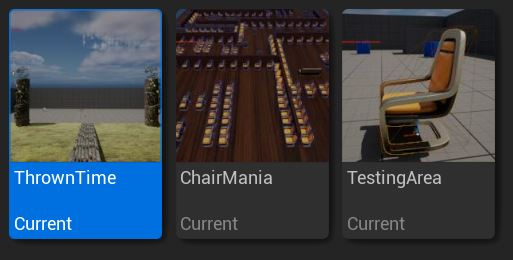

Implement multiple completed games, including 3D games, using common tools, languages and software for web,
console, PC or mobile platforms.
Thrown Time and Chair Mania are two completed projects mine. In Thrown Time you have a set timer to figure out how to get to the thrown but the timer only goes down when you move, giving you time to look and plan what you will do as you won't have time for any mistakes. As for Chair Mania you must reach the goal without touching any chairs as the chairs will hurt you and you will lose if you get hurt enough, Chair has many puzzles such as Maze's and platforming.